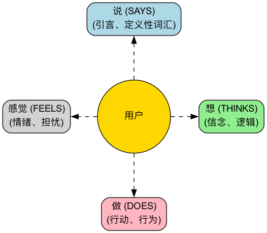

同理心地图¶
在产品设计和用户研究中，“同理心（Empathy）”是一个被频繁提及但又极难真正做到的核心素养。我们如何才能真正地“穿上用户的鞋子”，设身处地地去感受他们的世界？同理心地图（Empathy Map） 正是为此而设计的一个简单、直观但极其强大的协作式共情工具。它旨在帮助团队超越用户行为的表象，深入到其背后更深层的感官、思想和情感世界，从而对用户形成一个更全面、更立体的认知。
同理心地图的核心，在于将关于用户的所有零散的、定性的观察和访谈数据，系统性地组织到一个可视化的框架中。这个框架通常被划分为四个主要象限：所看（Sees）、所听（Hears）、所想与所感（Thinks & Feels）、所说与所做（Says & Does）。通过协作式地填充这张地图，团队成员被迫从用户的视角出发，共同构建起一个关于用户内心世界和外部环境的共享理解。它是一面映照出用户真实处境的镜子，是培养团队集体同理心的催化剂。
同理心地图的构成¶
一个经典的同理心地图，以用户为中心，围绕其展开四个核心的外部与内部体验象限。
- 所看（Sees）：描述用户在他所处的环境中，用眼睛能看到的东西。例如，他周围的人在做什么？他每天接触的市场信息是什么？
- 所听（Hears）：描述用户从外部世界听到的信息。他的朋友、家人、同事在说什么？他被哪些意见领袖或媒体渠道所影响？
- 所想与所感（Thinks & Feels）：这是地图的核心，试图探索用户的内心世界。什么是对他来说真正重要的事（即使他从未说出口）？他有哪些担忧、焦虑、希望和梦想？
- 所说与所做（Says & Does）：描述用户在公开场合下的言行举止。他在访谈中对我们说了什么？他在实际使用产品时的行为是怎样的？这里需要特别注意“所说”与“所想”之间的可能存在的矛盾。
- 痛点（Pains） 和 收益（Gains）：在分析完以上四个象限后，对用户的内心挣扎和渴望进行总结。痛点代表了他所面临的障碍和负面情绪，而收益则代表了他真正想要实现的目标和愿望。

B & C & D & E; D & E --> F & G; end ```
如何使用同理心地图¶
同理心地图最适合以团队工作坊的形式进行。
-
第一步：定义范围和目标
- 选择你的用户：明确这次同理心地图是针对哪一个具体的用户画像或人物。最好能给他一个名字和基本背景。
- 明确目标：定义你希望通过这次练习达成的目标。是为了更好地理解现有用户，还是为了探索一个新产品的潜在用户？
-
第二步：收集研究素材
同理心地图必须基于真实的研究，而非虚构。将所有相关的用户研究资料都准备好，例如：用户访谈的录音和文字稿、可用性测试的录像、问卷调查的开放题回答、用户照片等。
-
第三步：团队协作填充地图
- 将一张大的同理心地图模板画在白板上，或者使用在线协作工具。
- 团队成员一起，将研究资料中的发现，以便利贴的形式，逐条地写下来，并贴到地图相应的象限中。例如，当听到一段访谈录音时，一个成员可能会写下“用户说他每周都加班（所说）”，另一个成员则可能写下“我感觉他听起来很疲惫，对工作失去了热情（所感）”。
- 鼓励团队成员大声地读出便利贴的内容，并解释为什么把它放在这个象限。
-
第四步：深入挖掘与综合
当所有信息都上墙后，引导团队进行更深入的讨论。 * “我们看到了哪些矛盾之处？例如，用户的言行不一？” * “在所有这些细节背后，什么是他真正关心但没有说出口的事情？” * “我们学到了哪些意料之外的东西？” * 最后，共同总结出用户最核心的痛点和收益。
-
第五步：分享与应用
将完成的同理心地图进行整理和分享，并将其作为后续设计和决策的重要输入。
应用案例¶
案例一：为老年人设计一款智能手机
- 用户：王大爷，70岁，刚拿到子女给买的智能手机。
- 所看：手机屏幕上的图标又小又多，看不清；年轻人都在用手机支付和聊天。
- 所听：子女说“这个很简单的，您学学就会了”；老朋友说“那玩意儿太复杂，我学不会”。
- 所想与所感：感到很挫败，害怕自己落伍了；又很渴望能学会用手机和孙子视频聊天。
- 所说与所做：嘴上说“我不需要这个”，但私下里会反复尝试解锁屏幕。
- 痛点：害怕操作失误造成损失；感觉自己被科技抛弃了。
- 收益：希望能与家人保持更紧密的联系；希望能独立完成一些日常事务（如查公交）。
- 设计启发：这款手机的核心设计原则不应是“功能强大”，而应是“无挫败感”。需要提供“超大字体模式”、“亲情远程协助”等功能。
案例二：为大学生设计一款求职App
- 用户：李雪，22岁，即将毕业的大学生。
- 所看：招聘网站上信息繁杂，真假难辨；身边的同学都拿到了好几个Offer。
- 所听：学长学姐说“第一份工作很重要”；父母说“找个稳定的工作最重要”。
- 所想与所感：对未来感到非常迷茫和焦虑；不确定自己到底适合什么样的工作；害怕在面试中表现不好。
- 所说与所做：海投了上百份简历；反复修改自己的简历。
- 痛点：缺乏求职方向感；信息不对称；缺乏自信。
- 收益：希望能找到一份自己真正感兴趣、有发展前景的工作；希望能获得专业的专业指导和建议。
- 设计启发：App的核心功能不应只是一个职位列表，而应增加“职业性格测试”、“行业导师在线咨询”、“面试模拟练习”等模块。
案例三：为内容创作者设计一款写作工具
- 用户：张伟，一名兼职博主。
- 所看：其他博主每天都在更新高质量文章；自己的文章阅读量停滞不前。
- 所听：读者评论说“写得很好，期待更新”；朋友说“做博主很难赚钱的”。
- 所想与所感：灵感枯竭时感到非常痛苦；渴望获得读者的认可和共鸣；在坚持理想和现实收入之间感到挣扎。
- 所说与所做：花费大量时间在资料搜集和内容排版上；经常在深夜写作。
- 痛点：写作流程中断，效率低下；缺乏持续创作的动力。
- 收益：希望能有一个能帮助自己整理思绪、激发灵感的工具；希望能与读者建立更深的连接。
- 设计启发：写作工具除了基础的编辑功能，还应提供“灵感卡片收集”、“思维导图模式”、“读者互动数据分析”等特色功能。
同理心地图的优势与挑战¶
核心优势
- 快速高效：是一种可以在短时间内（通常60分钟以内）快速建立团队共情的有效方法。
- 促进团队协作：其协作式的特性，能够打破部门隔阂，让整个团队对用户形成统一的、深入的认知。
- 挖掘隐性需求：通过关注用户的内心世界，有助于发现那些用户自己都未曾清晰表达的潜在需求和痛点。
潜在挑战
- 不是用户画像的替代品：同理心地图通常聚焦于一个用户在一个特定场景下的状态，而用户画像则描绘了一个更完整、更持久的人物模型。同理心地图是创建用户画像的绝佳输入，但不能完全替代它。
- 需要真实数据支撑：和所有用户研究工具一样，如果缺乏真实的研究数据，同理心地图就可能变成团队成员主观臆断的“虚构故事会”。
延伸与关联¶
- 用户画像（Persona）：同理心地图是构建一个有血有肉、情感丰富的用户画像的关键前置步骤。通过同理心地图的分析，可以为用户画像的“痛点”、“目标”等模块提供极其生动的素材。
- 用户旅程图（User Journey Map）：在旅程图的每一个阶段，都可以用一个迷你的同理心地图来深入分析用户在该阶段的所思所想和所感，从而更精准地找到每个环节的痛点。
来源参考：同理心地图最初由XPLANE（现在是Deloitte旗下的公司）的创始人戴夫·格雷（Dave Gray）提出，并被广泛应用于设计思维（Design Thinking）和敏捷开发（Agile）的实践中。它是以用户为中心的设计流程中，一个基础且核心的共情工具。